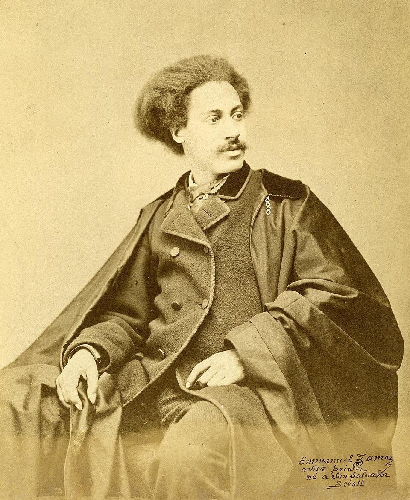
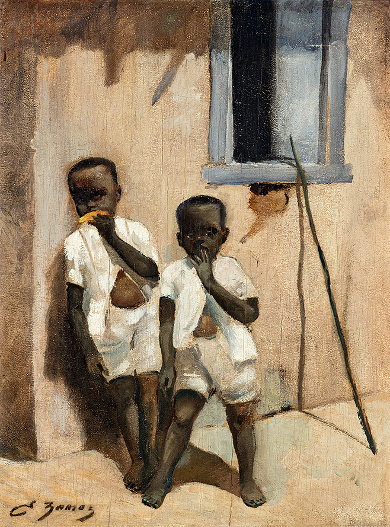
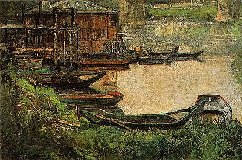
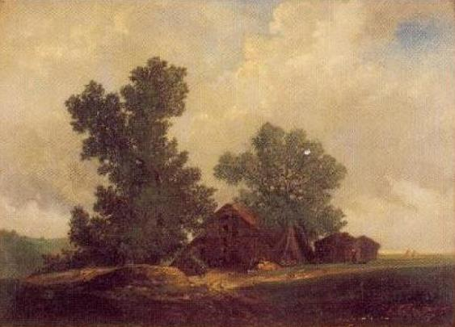

Emmanuel Zamor

Pseudônimo de Manuel Pierre Hubert Zamore,também conhecido como Emmanuel Hector Zamor (Salvador, 19 de maio de 1840 - Créteil, Val-de-Marne, 6 de março de 1919), alcunhado Le Petit Brésilien, foi um desenhista, pintor, litógrafo poeta e letrista de canções brasileiro radicado na França. Especializou-se na pintura de paisagens e naturezas mortas.

Umas das pinturas mais famosas de Zamor a óleo sobre madeira que se encontra no Acervo do Museu Afro Brasil "Crianças negras"

Umas das pinturas muito conhecida de Zamor a óleo sobre madeira que se encontra no Acervo do Museu Afro Brasil "Barcas na margem do rio"
